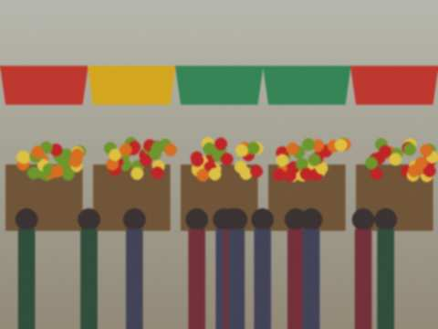

Archive for the ‘phones’ Category
Sunday, September 4th, 2011 · 6:40 pm
September is the month of students. They come in groups of three, with a budget of 400 som and an opinion of 3,000. Here's what I tell them:
- Buy a phone with a removable battery. When the battery dies in two years, you will not need a new phone.
- Buy a phone that takes a big memory card. You will want music and photos.
- Do not buy the phone your friend bought. Your hands are not his hands.
- Ask for a case in the box. If they say no, ask for a discount.
- Keep the box and the receipt for six months.
And the final rule: the best phone is the one you will not be afraid to lose on the bus.
Saturday, March 26th, 2011 · 7:30 pm
I finally bought one for myself. It has apps, a map, a browser that shows real websites. I read this blog on it right now. The theme looks small but it works.
The future is here and it is in my pocket and it needs charging every night.
Sunday, January 30th, 2011 · 7:30 pm
The shop gets one every week. A phone in the tea, the bath, the river, the soup. Rules:
- Take out the battery at once. Do not press any button.
- Dry the outside with a cloth.
- Do NOT use rice. Rice has starch, and it leaves a powder inside.
- Do NOT use a hairdryer. The heat melts small things.
- Put it in a warm place, not hot, for two days, with the battery out.
- If it still does not work, bring it to us. The repair is 30-80 som, and the ones that come back are the ones where nobody pressed anything.
I have saved eleven phones this winter. The twelfth was in a pot of soup, with the lid on. I'm told it was an accident. It was a good soup.
Sunday, December 12th, 2010 · 9:10 pm
Every phone has had it since 1998. Snake. A line that eats and grows, until it eats itself. Whole families lost afternoons, a customer lost a bus stop and then a bus, and I have personally lost a shift.
I have seen three generations of Snake: the black-and-white one, the green one, and the new one with a graphic apple. All of them have the same message: the more you eat, the less space you have. A philosophy in four buttons.
Ask me what is the best game on a phone. I say: the one that does not need to be charged. But if I'm honest, it's Snake.
Sunday, September 19th, 2010 · 8:00 pm
Today an old woman, about 75, came to the shop with a small piece of paper. On the paper she had written, in big letters, a message to her grandson in Almaty: "I AM WELL. THE APPLES ARE RIPE. WHEN DO YOU COME."
I helped her type it letter by letter. It took twenty minutes. She pressed each key like she was ringing a doorbell. When it was done she asked me to show her the "send" key, and I did. She looked at the screen. "Where does it go?" "Through the air, apa." "Through the air," she repeated, and she nodded for a long time.
The answer came three minutes later: "I'LL COME IN OCTOBER GRANDMA." She read it, folded the paper, and said, "Now I know it is not magic. It was too fast for magic." And she bought a charger.
Sunday, May 9th, 2010 · 8:30 pm
A customer asked for "a phone with the most megapixels". I said, let's see what you photograph. He said: "My wife, my car and the sheep." I said: for the wife, 2 MP is enough. For the sheep, 5 MP. For the car you need a better driver.
Megapixels are the number of dots. More dots do not make a better photo if the lens is small and the light is weak. A 3 MP phone with a good lens and a window is better than a 5 MP phone with a bad lens in a cellar.
What I look at: the lens (is it glass or plastic?), the flash (LED is good), and the time between pressing and the picture, because a child does not stand still for a second.
Saturday, October 3rd, 2009 · 8:40 pm
The first touch-screen phones arrived at the shop. Customers poke them like a hot stove. One grandmother asked where the buttons are and when I showed her she said "and when it breaks?". Good question, apa.
The phone row at the bazaar, where the cheaper ones come from.
Sunday, August 30th, 2009 · 9:30 pm

The memory-card man at the bazaar. His cards are the cheapest in Talas and the capacity is a matter of faith.A customer came to me with a 4 GB card that cost 90 som at the bazaar. He had put 200 songs on it, and after the 80th the phone said "memory full". I tested it. It was 512 MB with a label saying 4 GB.
Some rules from the shop:
- A real card has the brand printed, not stuck on.
- Test: put a large file, then copy it back. If the copy is damaged, the card is lying.
- The real price of a 2 GB card this summer is 40-60 som. If it is 25, it is not 2 GB.
The bazaar man says: "I never say the card is 4 GB. I say it is a 4 GB card." Nobody has ever found the difference.
Tuesday, January 27th, 2009 · 6:00 pm
Many people come to the shop now asking how to keep the phone alive with the power limits. My advice:
- Turn off Bluetooth. Nobody is sending you anything.
- Bring the charger to work, school, the internet club, anywhere with a generator.
- Car chargers work. If you have a car. If you have petrol.
- We sell battery packs now. Not the cheap Chinese ones, they swell up.
Stay warm everybody.
Sunday, December 7th, 2008 · 8:50 pm
Winter is here and the phone dies in the pocket on the bus. It is not broken. The cold slows the chemistry in the battery, and the screen goes dark when you try to call. Then you put it in your hand for a minute and it comes back.
Tips from the counter:
- Keep the phone in the inner pocket, near the body, not in the coat.
- Do not charge it when it is freezing. Bring it inside for twenty minutes first.
- A spare battery is the best present for a husband who works outside.
The shop is cold too. Today the customer and I both wore gloves and he typed his number with a pen.
Saturday, June 28th, 2008 · 9:40 pm
They come by suitcase and they come very nice. The box is the same, the manual is the same, the logo is the same. Here is my list from the counter of how to tell:
- Weight. A real one is heavier by a few grams. The battery is real lithium. The fake battery is a sad brick.
- Under the battery: dial *#06# and compare the number with the sticker. If they differ, the phone has two names.
- The screen when you turn it off: real ones go black, quietly. Fakes have a small blue light, like a ghost.
- The sound: a real ringtone is clear, a fake one hurts your ear.
- The price: if it is 40% below the shop prices, ask yourself why.
I do not say all Chinese phones are fake. Some of them are honest, they say "Nokla" on the case and nobody lies. I respect that more.
Saturday, May 17th, 2008 · 8:10 pm
Many customers ask me this since the 17th of March and I answer it forty times a day, so here it is once for everybody.
Phones come from abroad and they are bought in dollars. Before March the dollar was 5 som. Now it is 8.40. A phone that cost our boss $60 at the wholesale was 300 som, now it is more than 500. The boss did not become greedy, the arithmetic became bigger.
Here is what I tell people at the counter:
- The cheapest new phone in the shop today: 520 som. A simple Nokia, no camera, a torch.
- The mid range with 2 MP camera and a card slot: 900-1,100.
- The one with the slide and the click: 1,300 (yes, I know).
- Second-hand: from 250, but ask me first, I check it with a magnet and a screwdriver.
If your salary is in som and your phone is in dollars, buy the simple one and keep it for five years. It will survive. The shiny ones are for people who are paid in dollars (and I see them, they pay and don't look at the price, like in a dream).
Sunday, April 20th, 2008 · 8:30 pm
Came to our shop on Thursday, three pieces. It slides up to show the keys and makes a very satisfying click. Camera 2 megapixels, which is enough to photograph your plov and your cousin. Battery: two days if you don't play Snake.
Price at our shop: I can't write it here, the boss says. Come and ask. (It is less than at the big shop near the square.)
 The shop counter at 10 a.m., before the crowds.
The shop counter at 10 a.m., before the crowds.